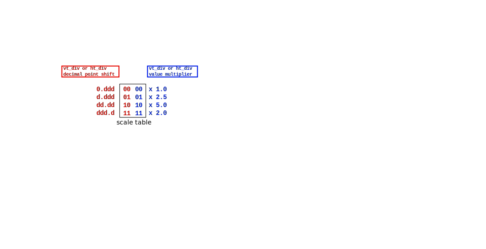

package std¶
scale_vector¶
| Parameter | Type | Description |
|---|---|---|
| from | real | Scale’s starting point |
| step | real | Scale’s increment step |
| mult | natural | Adjusting input value |
| scale | std_logic_vector | Scale reading control |
| deca | std_logic_vector | Scale factor’s ascii code |
from¶
Scale starting point. It could be a positive as well as a negative number.
step¶
Scale increment step. It could be a positive as well as a negative number.
mult¶
Adjusting input value. Mult is used to adjust the vetical input value to plot the data accordint to the selected scale, and it is used to devide the input data clk for the horizontal scale.
scale¶
Scale is a four bit std_logic_vector whose two most left bits shift the decimal point of base divisions: vt_div or hz_div while the other two most right bits select a number from: 1.0, 2.5, 5.0 or 2.0 by which those base divisions are multiplied. The proper number is selected by combining all of the four bits.
{kind=link}
deca¶
It is the corresponding ascii code to be displayed according to the scale factor.